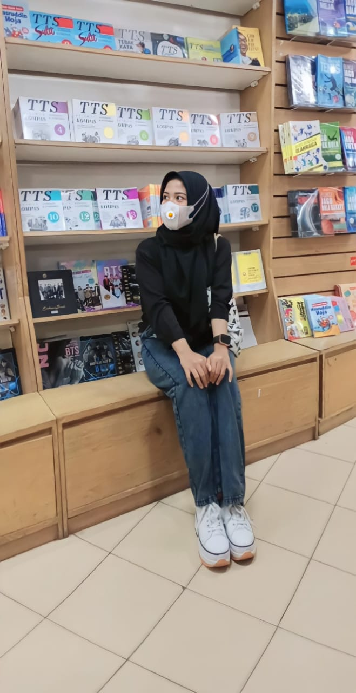

Rohima ayu Chintiya
Saya Rohima ayu Chintiya
Ttl : Cirebon, 24 juli 2002
hobby : Membaca
Cita-cita : Jadi manusia yang berhasil dan sukses
Saya Rohima ayu Chintiya
Ttl : Cirebon, 24 juli 2002
hobby : Membaca
Cita-cita : Jadi manusia yang berhasil dan sukses
Saya Muhammad Faraby
Ttl : Palembang, 7 Oktober 2001
hobby : Berenang
Cita-cita : Membahagiakan orang tua
Saya Siti nur eliza
Ttl : Lahat, 11 Oktober 2002
hobby : Menyanyi
Cita-cita : Pengusaha sukses
Saya Rissa Rapica Amalia
Ttl : 25 oktober 2001
hobby : memasak
Cita-cita : chef
Saya Muhammad Finaldo
Ttl : Palembang, 30 Juni 2002
hobby : Sepakbola
Cita-cita : Pengusaha